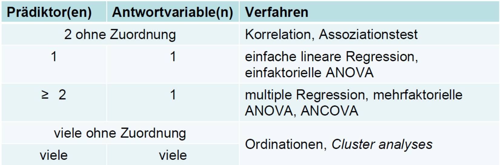
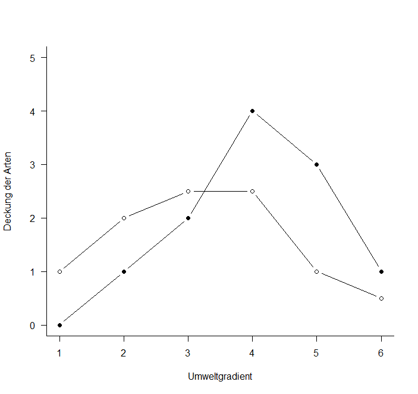
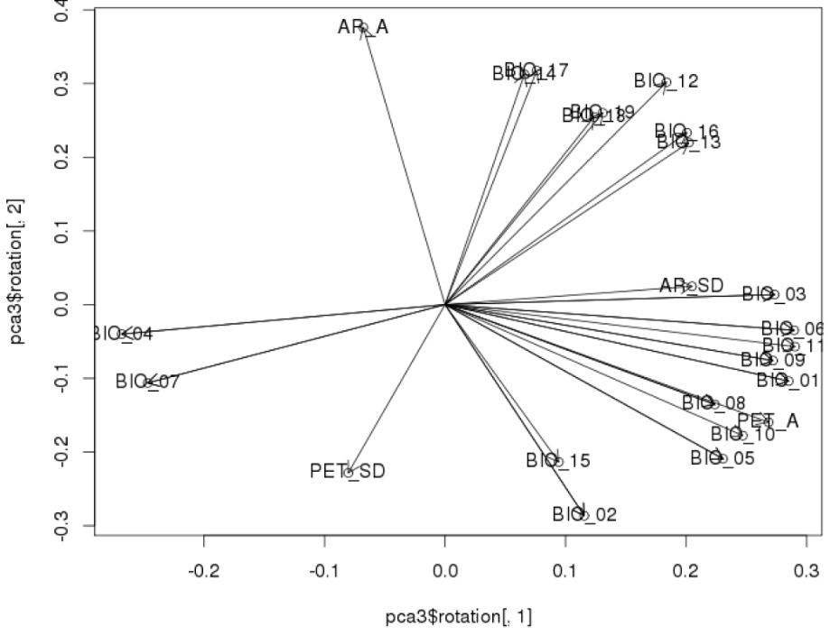
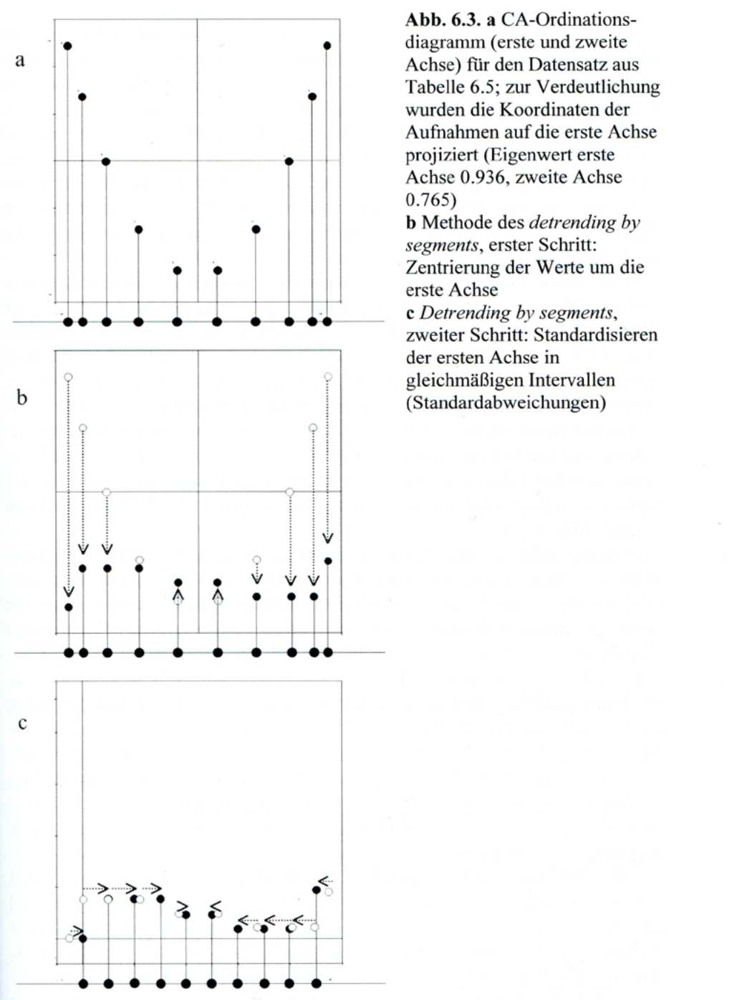
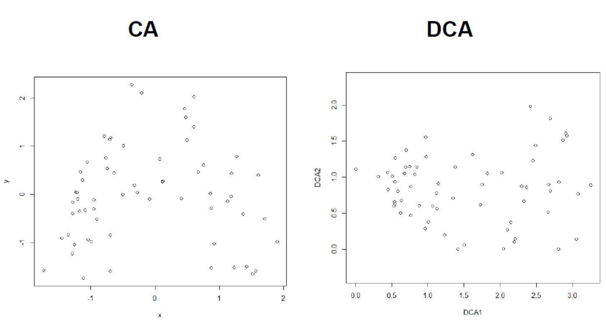
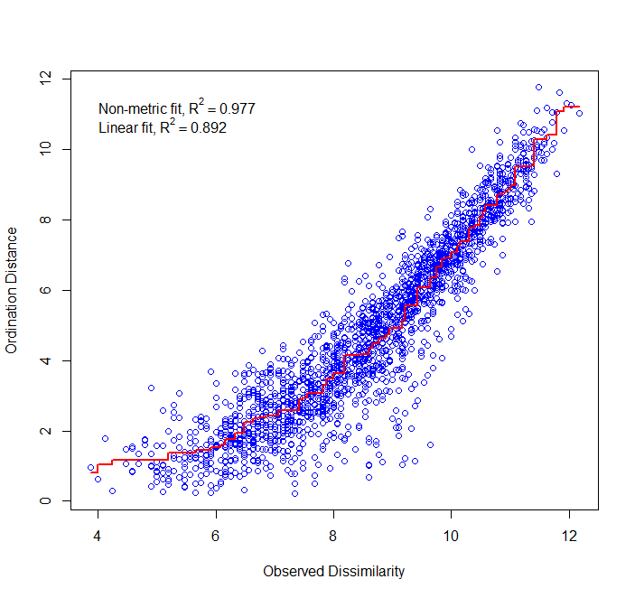

Statistik 6
Einführung in “multivariate” Methoden und Ordinationen I
Statistik 6 führt in multivariat-deskriptive Methoden ein, die dazu dienen Datensätze mit multiplen abhängigen und multiplen unabhängigen Variablen effektiv zu analysieren. Dabei betonen Ordinationen kontinuierliche Gradienten und fokussieren auf zusammengehörende Variablen, während Cluster-Analysen Diskontinuitäten betonen und auf zusammengehörende Beobachtungen fokussieren. Es folgt eine konzeptionelle Einführung in die Idee von Ordinationen als einer Technik der deskriptiven Statistik, die Strukturen in multivariaten Datensätzen via Dimensionsreduktion visualisiert. Das Prinzip und die praktische Implementierung wird detailliert am Beispiel der Hauptkomponentenanalyse (PCA) erklärt. Danach folgen kurze Einführungen in weitere Ordinationstechniken für besondere Fälle, welche bestimmte Limitierungen der PCA überwinden, namentlich CA, DCA und NMDS.
Lernziele
Einführung in “multivariate” Methoden
Was ist mit “multivariat” gemeint?
Was ist mit “multivariat” gemeint? Zunächst einmal sagt das nur, dass pro Beobachtung (observation) mehr als zwei Variablen erhoben werden, deren Beziehungen zueinander analysiert werden. Im Wortsinne waren also auch schon die zweifaktorielle ANOVA und die multiple Regression “multivariate” Methoden.
Die folgende Tabelle fasst die schon besprochenen und noch kommenden statistischen Verfahren bezüglich der Anzahl von Prädiktor- und Antwortvariablen zusammen:

In der Literatur wird der Begriff “multivariat” jedoch oft nur für die letzte Gruppe von Verfahren, also Ordinationen und Cluster-Analysen, gebraucht. Diese bilden den Gegenstand von Statistik 6–8.
Inferenzstatistik vs. deskriptive Statistik
Bislang haben wir statistische Verfahren überwiegend zum Testen von Hypothesen verwendet (inklusive des impliziten Hypothesentestens, wenn man eine offene Forschungsfrage beantwortet): Inferenzstatistik (schliessende Statistik).
Ordinationen und Cluster-Analysen** sind überwiegend deskriptive Statistik** (ohne spezielle Zusatzschritte erlauben sie kein Testen von Hypothesen!).
Beispiele multivariater Datensätze
Multivariate Datensätze sind in unserer “datenreichen” Welt allgegenwärtig z. B.:
- Bodenproben, an denen viele unterschiedliche physikalische und chemische Variablen, ggf. auch noch in verschiedenen Horizonten gemessen wurden.
- Klimadaten von Messstationen: zahlreiche Variablen wie Mittel/Minima/Maxima von Temperatur/Niederschlag/Sonnenschein/Bewölkung/Windstärke usw. und das für jeden Monat.
- Zusammensetzungen von lokalen Pflanzengesellschaften oder Tiergemeinschaften: hier sind die Deckungen bzw. Individuenzahlen der einzelnen Arten die Variablen
- Ergebnisse von Befragungen von Konsumenten: viele Variablen zu Präferenzen, Einstellungen usw.
Ziele multivariat-deskriptiver Analysen
Im Prinzip können wir auch bei solchen Beobachtungsdaten mit vielen abhängigen Variablen wie bisher jede einzeln testen:
- Das kann vorteilhaft sein, wenn man konkrete Hypothesen testen will (was ja mit multivariat-deskriptiven Methoden normalerweise nicht geht).
- Ein Problem sind die vielen Tests mit dem gleichen Datensatz, die zu einer “Inflation” der Typ I-Fehlerrate führen (wenn ich 20 Tests durchführe, würde ja bei α = 0.05 einer rein zufällig eine Signifikanz anzeigen, selbst wenn eigentlich für keinen einen Beziehung besteht). Für dieses Problem gibt es aber Korrekturmöglichkeiten (z. B. “Bonferroni”-Korrektur).
- Problematischer ist, dass es sehr schwierig ist, aus den vielen Einzelergebnissen am Ende ein aussagekräftiges Gesamtbild zu synthetisieren.
Hier setzen die multivariat-deskriptiven Methoden mit ihren beiden Hauptzielen an:
- Muster und Beziehungen im n-dimensionalen Hyperraum erkennen und beschreiben.
- Dimensionsreduktion: die wesentliche Information aus den n Dimensionen wird auf 2 bis wenige Dimensionen reduziert, die vorstellbar und visualisierbar sind.
Der n-dimensionale Hyperraum ist das Konzept, das uns durchgängig bei den multivariat-deskriptiven Methoden begleitet. Dahinter verbirgt sich die Idee, dass jede der n Variablen eine orthogonale Achse ist, auf der die Ausprägungen der Variablen (metrisch oder kategorial) aufgetragen sind. Während wir uns einen 3-dimensionalen Raum noch vorstellen können, ist es mit der Vorstellungskraft bei vier oder gar 100 Dimensionen schnell zu Ende. Aber das ist ja genau der Grund für die multivariat-deskriptiven Methoden…
Zwei komplementäre Ansätze
Innerhalb der multivariat-deskriptiven Statistik stellen Ordinationen und Cluster-Analysen (Klassifikationen) zwei komplementäre Ansätze dar. Sie betonen unterschiedliche Aspekte des Datensatzes und können oftmals sogar sinnvoll parallel verwendet werden. Die wesentlichen Unterschiede zeigt die folgende Tabelle:

Die Idee von Ordinationen
Ordinationen versuchen nun im Prinzip im n-dimensionalen Raum der (Antwort-) Variablen diejenigen Ebenen zu finden, welche die meiste Varianz erklären. Dies geschieht durch die folgenden Schritte:
- Zentrieren der Punktwolke, so dass der Schwerpunkt im Ursprung des Koordinatensystems liegt.
- Rotieren der Punktwolke, bis die erste Achse die maximal mögliche Varianz abbildet.
- Nach Fixierung der ersten Achse Fortsetzen des Rotierens, bis die zweite Achse wiederum das maximal Mögliche der verbleibenden Varianz abbildet, usw. bis zur n-ten Achse.
- Visualisierung der Ergebnisse bei Beschränkung auf die relevanten ersten Achsen.
Um diese Idee zu visualisieren, nehmen wir ein System von nur zwei Variablen, da wir diese noch auf einer Ebene (d. h. im gedruckten Skript) visualisieren können. Stellen wir uns sechs Beobachtungspunkte entlang eines Umweltgradienten (z. B. Meereshöhe) vor. An jedem dieser Beobachtungspunkte wird die Häufigkeit von zwei Arten ermittelt, etwa folgendermassen:

Wenn wir das jetzt im “Artenraum” zeigen, also mit der Häufigkeit von Art 1 auf der x-Achse und der Häufigkeit von Art 2 auf der y-Achse, dan bekämen wir das grüne Muster. Zentriert (d. h. so dass die Mittelwerte aller x- und y-Werte jeweils 0 sind), ergibt sich die rote Figur. Dies wird schliesslich so rotiert, dass die maximale Varianz (hier im simplen Fall einfach die Distanz zwischen den extremen Punkten) paralle zur x-Achse liegt (blau).

Hauptkomponentenanalyse (PCA)
Das Prinzip
Das im vorigen Abschnitt skizzierte Vorgehen, ist genau das, was eine Hauptkomponentenanalyse (Principal component analysis, PCA) macht:
- Basiert auf einer linearen Beziehung zwischen den Attributen.
- Achsen sind orthogonal (und die Varianzen daher additiv).
- Die ursprünglichen Distanzen zwischen den Objekten (Beobachtungen) bleiben daher unverändert.
PCAs eignen sich für:
- Einfache Visualisierung, wenn die Linearität gegeben ist.
- Bei multiplen Regressionen mit vielen, korrelierten Prädiktoren kann man die PCA-Achsen als synthetische Prädiktoren verwenden, da sie vollständig unkorreliert sind.
PCAs eignen sich nicht(und das gilt fast immer für für Daten zur Artenzusammensetzung ökologischer Gemeinschaften) für:
- Nicht-lineare Beziehungen.
- Viele Nullen in der Matrix.
Die PCA findet die beste Rotation mittels der sogenannten “Eigenanalyse”, wie die folgende Abbildung veranschaulicht:


(aus Wildi 2013)
Dabei gilt:
\[\begin{align*} \alpha &= \text{Eigenvektormatrix}\\ &= \text{Korrelationskoeffizient (der Arten/Variablen) mit den Ordinationsachsen} \end{align*}\]
\[ \text{Eigenwerte einre Achse} = \text{Sum of Squares der Achse} \]
In R
PCAs sind z. B. im Package labdsv implementiert:
library(labdsv)
o.pca <- pca(raw)
o.pca$scores PC1 PC2
r1 -1.9216223 -0.09357697
r2 -0.6353776 -0.68143293
r3 0.4762699 -0.80076373
r4 2.3503705 -0.10237502
r5 0.8895287 0.95400610
r6 -1.1591692 0.72414255o.pca$loadings PC1 PC2
spec.1 0.3491944 -0.9370503
spec.2 0.9370503 0.3491944# Erklärte Varianz der Achsen
E <- o.pca$sdev^2/o.pca$totdev*100
E[1] 82.40009 17.59991Zunächst wird die PCA ausgeführt und das Ergebnis in einem Objekt (o.pca) gespeichert. Die uns Interessierten Informationen kann man wie oben gezeigt abrufen: ...$scores enthält die resultierenden Koordinaten der Beobachtungen nach der Ordination; ...$loadings gibt die Vektoren wieder, die nach der Rotation den beiden Arten entsprechen (Art 1 hat also den Vektor 0.35/–0.94). Die erklärte Varianz ist ein uns schon bekanntes Konzept. Die Gesamtvarianz ist alles, was im Datensatz mit seinen n Achsen drin steckt (100%), hier wird dieser Wert auf die Achsen aufgeteilt, also 82 % auf der ersten Achse, 18 % auf der zweiten. Alle n Achsen zusammen ergeben immer 100 %.
Ziel einer PCA ist ja meist eine Visualisierung. Für unsere sechs Beobachtungen von zwei Arten haben wir das oben ja schon gemacht (und da hat es auch keine Dimensionsreduktion gebracht, da es eh nur zwei Arten waren). Wenn wir uns nun aber einen Datensatz mit 63 Beobachtungspunkten (hier: Vegetationsaufnahmen) und 119 Variablen (hier: Pflanzenarten) anschauen, dann haben wir eine Dimensionsreduktion von 119 auf 2. Das aufbereitete Ergebnis kann dann wie folgt aussehen (den R Code dazu gibt es im Demoskript):


Bitte beachten, dass wir hier eine PCA für einen Fall gerechnet haben (ökologische Gemeinschaftsdaten), für den sie mit seltenen Ausnahmen ungeeignet ist. Warum sie hier problematisch war, werden wir weiter unten ansehen wie auch Lösungen dafür.
Beispiele von Anwendungen von PCAs
Zunächst sollen aber einige gängige und korrekte Anwendungen auf sehr grossen Datensets gezeigt werden:
- Visualisierung 1: Hier wurden etwa 20 verschiedene bioklimatische Variablen für alle Rasterzellen der Erdoberfläche (Farbkodierung gibt die Häufigkeit wieder) einer PCA unterworfen. Die Klimadaten sind so hoch korreliert, dass die ersten beiden Achen (Hauptkomponenten) PC1 und PC2 zusammen 76 % der Varianz im Gesamtdatensatz kodieren. Es wäre also unsinnig, die 20 Variablen einzeln zu analysieren. Durch die rechts gezeigten Korrelationen der Originalvariablen mit PC1 und PC2 kann man die beiden synthetischen Achsen näherungsweise interpretieren (siehe die Achsenbeschriftung links).


(aus Bruelheide et al. 2019)
- Visualisierung 2: Hier wurden 6 funktionelle Merkmale (traits) von Pflanzenarten weltweit einer PCA unterworfen. Diese erweisen sich so weit korreliert, dass die ersten beiden Achen (Hauptkomponenten) PC1 und PC2 zusammen 74% der Varianz kodieren. Der eine wesentliche Gradient (etwas gegen PC1 nach links verdreht) ist jender von winizigen, kleinsamigen Arten zu grossen Arten mit schweren Samen. Dazu weitgehend orthogonal ist der Gradient von Pflanzen mit stickstoffreichen Blättern (links oben) zu Pflanzen mit stickstoffarmen Blättern (rechts unten).

- Principal Components (PCs) in multiplen Regressionen: Hier rechnet man zunächst eine PCA mit vielen Umweltvariablen ohne Rücksicht auf ihre wechselseitigen Korrelationen. Dann nimmt man die (ersten) PC-Achsen mit der meisten Information als sogenannte “synthetische” Prädiktoren.
- Vorteil: Die PC-Achsen sind vollständig unkorreliert.
- Nachteil: Die PC-Achsen sind nicht so direkt interpretierbar wie die Original-Umweltparameter, das sie zwar oft stark mit mehreren Umweltparametern korrelieren, aber eben nicht 100 %.
- Wichtig: Hochladende Achsen sind nicht unbedingt auch die wichtigsten für die Regression.
Ordinationen für “problematische” Fälle
Wann sind PCAs problematisch?
Wie schon erwähnt, ist die Anwendung von PCAs problematisch/falsch, wenn einer oder beide der folgenden Fälle vorliegen:
Nicht-lineare Beziehungen.
Vielen Nullen in der Matrix.
In der Ökologie ist das besonders relevant, da beides für Artdaten in der Gemeinschaftsökologie (community ecology) nicht die Ausnahme, sondern der Normalfall ist. Arten reagieren auf Umweltfaktoren meist nicht linear, sondern unimodal (humpshaped) und in grossen Matrizen von Artvorkommen in Vegetationsaufnahmen und Gebieten ist es normal, dass die meisten Arten in den meisten Aufnahmeflächen nicht vorkommen, also ihre Deckung oder Abundanz Null ist. Dagegen lassen sich Matrizen von Umweltdaten der Untersuchungsgebiete (etwa von Boden- und Klimadaten) problemlos mit einer PCA analysieren (siehe Beispiel (a) im vorigen Abschnitt, da es ja keine Nullwerte gibt).
Warum sind nicht-lineare Beziehungen in einer PCA problematisch? Sehen wir uns dazu noch einmal unser Eingangsbeispiel der zwei Arten entlang eines Umweltgradienten von 1 bis 6 an:
Aufgrund des Umweltgradienten sollten die Beobachtungen/Standorte 1 und 6 maximal unähnlich sein. Tatsächlich kommen sie aber im Ordinationsdiagramm sehr nahe beieinander zu liegen. Das liegt daran, dass beide Arten unimodal (mit einer Optimumskurve) auf den Umweltgradienten reagieren. Wenn der Umweltgradient etwa die Bodenfeuchte wäre, hiesse das, dass beide bei mittlerer Bodenfeuchte am häufigsten sind und Richtung sehr nasser oder sehr trockener Böden seltener werden. Das heisst, an den Standorten 1 und 6 sind beide relativ selten, wenn auch aus unterschiedlichen Gründen, die Artenzusammensetzung daher ingesamt ähnlich.
Man bezeichnet dieses Phänomen/Problem: als Hufeisen- oder Bogeneffekt (horse shoe/arch effect).
Korrespondenzanalyse (CA)
Ein Verfahren, um solche Probleme (vor allem in der Gemeinschaftsökologie) anzugehen, ist die Korrespondenzanalyse (Correspondence Analysis, CA). Sie wird auch als Reciprocal Averging bezeichnet. Wichtige Aspekte der CA sind:
- Hier wie in allen folgenden Ordinationsmethoden wird der Ordinationsraum transformiert (im Gegensatz zur PCA) durch die Anwendung eines Distanzmasses.
- CA hat als Distanzmass implizit die \(\chi^2\)-Metrik. - CA ist spezifisch gedacht für Artenverteilungen entlang von Umweltgradienten, wobei jede Art für sich unimodal reagiert.
- Wie die meisten weiteren Ordinationstechniken implementiert im package vegan für community ecology.
In R wird das wie folgt umgesetzt (man beachte, dass häufig die Artdeckungen eingangs noch wurzeltransformiert werden (^0.5), um Arten mit geringer Deckung relativ mehr Gewicht zu geben):
library(vegan)
ca.1 <- cca(sveg^0.5)
# Arten (o) und Communities (+) plotten
plot(ca.1)
# Nur Arten plotten
plot(ca.1, display = "species", type = "points")
# Anteilige Varianz, die durch die ersten beiden Achsen erklärt wird
o.ca$CA$eig[1:2]/sum(o.ca$CA$eig)Wenn wir jetzt die Anwendung der PCA und der CA auf den Moordatensatz (63 Vegetationsaufnahmen mit 119 Arten) anschauen, den wir oben schon einmal kurz hatten, dann zeigt sich, dass aus dem Hufeisen im Prinzip ein (umgekehrtes) U oder V wird, die extremen Punkte des Gradienten also nicht mehr so nahe beisammen stehen:

Wie dieser Unterschied zustande kommt, visualisiert die folgende konzeptionelle Abbildung mit drei Arten:

DCA
Wie wir im vorigen Abschnitt gesehen haben, löst die CA die Probleme der PCA bei Community-Daten in der Ökologie, aber eben nur teilweise. Aus einem Hufeisen wird ein U, aber eigentlich war der Umweltgradient (hier von feucht nach trocken) ja linear, nur die Artantworten waren eben unimodal. Insofern wurde die CA noch weiter verfeinert, um den sich ergebenden Hauptumweltgradienten möglichst linear abzubilden. Wir landen bei der Detrended Correspondence Analysis (DCA), man könnte auf Deutsch von einer “trendbereinigten Korrespondenzanalyse” sprechen, aber dieser deutsche Begriff wird eigentlich nie gebraucht.
Es gibt verschiedene Detrending-Methoden, die gängigste ist “detrending by segments”. wie sie in folgendem Schema visualisiert ist:

Die mathematischen Schritte dahinter und die daraus resultierenden methodischen Entscheidungen sind etwas komplexer, so dass wir sie nicht im Detail behandeln. Wer die Dinge im Einzelnen nachvollziehen möchte, sei auf Leyer & Wesche (2007) bzw. Oksanen (2015) verwiesen. Der R Code (Funktion decorana im Package vegan) ist auch etwas länger, sodass wir ihn nicht hier im Skript wiedergeben, sondern nur in den R-Demos.
Aus dem Gesagten wird evident, dass eine DCA nach all den erfolgten Transformationen des Ordinationsraumes keine Methode der schliessenden Statistik ist, sondern ein (durchaus leistungsfähiges) Visualisierungstool komplexer Community-Daten. Da, wie geschildert, eine CA die Probleme der Ordination von Community-Daten nur unzureichend löst, findet sie als solche hier eigentlich nie Anwendung (siehe jedoch die CCA in Statistik 7), sondern entweder PCA oder DCA (oder eben NMDS, vgl. folgenden Abschnitt).
Warum wird jetzt doch wieder die PCA für Community-Daten genannt, nachdem sie bislang mehrfach als ungeeignet angeführt wurde? Meist passt sie methodisch nicht, aber es gibt Fälle, bei denen die Umweltgradienten so kurz sind, dass die Artenreaktionen auf den oder die Umweltgradienten in guter Näherung als linear betrachtet werden können. Das ist dann der Fall, wenn man lauter sehr ähnliche Standorte untersucht hat, dann ist eine PCA ausnahmsweise das bessere Modell. Wie weiss man, ob das bei einem bestimmten Datensatz der Fall ist?
Zunächst vielleicht etwas überraschend lautet die Antwort: man berechnet zuerst eine DCA. Ein Standard-Output der DCA ist die geschätzte Gradientenlänge der ersten Achse. Die Länge des Gradienten wird in Standardabweichungen (SD) quantifiziert, was zunächst “schräg” klingt. Das bezieht sich auf die Annahme, dass die Artenhäufigkeit entlang des Umweltgradienten näherungsweise einer Normalverteilung folgt. Vielleicht habt ihr im Hinterkopf, dass 95 % aller Werte einer Normalverteilungskurve im Bereich von Mittelwert ± 2 SD liegt. Wenn der geschätzte Gradient also 4 SD-Einheiten oder mehr ist, gibt es zwischen den beiden Enden des untersuchten Umweltgradienten praktisch keine gemeinsamen Arten (bzw. sie treten mit weniger als 1 % ihrer Maximalhäufigkeit auf), man spricht von einem vollständigen Arten-Turnover. Bei einer Gradientenlänge von 8 SD-Einheiten hätte man sogar zwei vollständige Arten-Turnovers, also letztlich drei komplett verschiedene Gesellschaften ohne Überlappung.
Die Faustregel für die Anwendung von DCA vs. PCA besagt, dass bei einer Länge der ersten Achse von < 3 SD-Einheiten mit der PCA gearbeitet werden sollte, bei einer Länge von 3–4 SD-Einheiten beide Methoden gehen und bei >4 SD-Einheiten man bei der DCA bleiben sollte. Man könnte aber auch argumentieren, dass die Annahmen der PCA theoretisch für solche Datensätze nie zutreffen, man also per se mit der DCA arbeiten sollte.
Schauen wir uns den Effekt noch im Fall unseres Moor-Datensatzes an:

Wie wir sehen, wurde aus dem umgekehrten U und eine relativ homogene Punktwolke, mit der längsten Ausdehnung entlang der ersten Achse (was ja die Grundidee einer Ordination ist). Die Gradientenlänge können wir auf der x-Achse ablesen, sie beträgt etwa 3.2 SD-Einheiten (Differenz der Position zwischen dem Punkt ganz links und dem Punkt ganz rechts).
NMDS
NMDS** steht für Non-metric Multi-Dimensional Scaling, wofür es keine gute/gängige deutsche Übersetzung gibt. Die wichtigsten Aspekte einer NMDS sind:
- “Non-metric”, da mit Rängen, nicht mit Distanzen gearbeitet wird.
- NMDS arbeitet mit einem Iterationsalgorithmus, der jedes Mal ein geringfügig anderes Ergebnis liefert.
- Startet mit einer beliebigen vorgegebenen Ordination, etwa einer PCA.
- Danach werden sukzessive die Punkte im niedrig-dimensionalen Ordinationsraum (meist 2D) geringfügig verschoben und geschaut, ob die originale Distanzmatrix besser wiedergegeben wird, so lange, bis ein (lokales) Optimum erreicht ist.
In R geht das folgendermassen. Dabei steht der Parameter k für die Zahl der gewünschten Dimensionen (normalerweise wählt man 2) (weitere Details dann in der Demo im Klassenverband):
# Distanzmatrix als Start erzeugen
mde <- vegdist(sveg, method="euclidean")
mde
# Zwei verschiedene NMDS-Methoden
set.seed(1) # macht man, wenn man bei einer Wiederholung exakt die gleichen Ergebnisse will
imds <- isoMDS(mde, k=2)
set.seed(1)
mmds <- metaMDS(mde, k=2)
plot(imds$points)
plot(mmds$points)
plot(o.imds$points)
plot(o.mmds$points)
# Stress = S2 = Abweichung der zweidimensionalen NMDS-Lösung von der originalen Distanzmatrix
stressplot(o.imds,mde)Das Ergebnis (hier mit dem Algorithmus isoMDS) sieht man links. Wie gut die NMDS die originale Struktur wiedergibt, zeigt sich rechts (erzeugt mit stressplot):


Zwei wichtige Aspekte sollte man hier noch erwähnen: Da NMDS mit einem interativen Algorithmus arbeitet, der eine Zufallskomponente enthält, kommen bei jedem Durchlauf geringfügig andere Ergebnisse heraus. Wenn man das verhindern will, kann man mit set.seed arbeiten, was erzwingt, dass die gleiche “Zufallswahl” auch bei neuerlichen Durchläufen des R-Scriptes getroffen wird. Das Mass für die Güte einer NMDS ist der sogenanante Stress:
\[ \text{Stress} = 1 - R^2 \]
In unserem Fall wäre der Stress also 1 – 0.977, also 2.3%, mithin sehr niedrig. Nur in 2.3% der Fälle würde die Lage im zweidimensionalen NMDS-Raum also das Ranking der Distanzen anders als das Ranking der Distanzen im ursprünglichen n-dimensionalen Hyperraum wiedergeben.
Zusammenfassung
Weiterführende Literatur
- Borcard, D., Gillet, F. & Legendre, P. 2018. Numerical ecology with R. 2nd ed. Springer, Cham: 435 pp. [mit R]
- Crawley, M.J. 2013. The R book. 2nd ed. John Wiley & Sons, Chichester, UK: 1051 pp. [mit R]
- Everitt, B. & Hothorn, T. 2011. An introduction to applied multivariate analysis with R. Springer, New York: 273 pp. [mit R]
- Leyer, I. & Wesche, K. 2007. Multivariate Statistik in der Ökologie. Springer, Berlin: 221 pp. [einfache Erklärung von Ordinationsmethoden, ohne R]
- McCune, B., Grace, J.B. & Urban, D.L. 2002. Analysis of ecological communities. MjM Software Design, Gleneden Beach, Oregon, US: 300 pp. [gut erklärte und detaillierte Einführung in Ordinationen u.a., ohne R]
- Oksanen, L. 2015. Multivariate analysis of ecological communities in R: vegan tutorial. URL: http://cc.oulu.fi/~jarioksa/opetus/metodi/vegantutor.pdf. [gute Einführung in das R-package vegan mit vielen Ordinationsmethoden]
- Wildi, O. 2013. Data analysis in vegetation ecology. 2nd ed.Wiley-Blackwell, Chichester, UK: 301 pp. [mit R]
- Wildi, O. 2017. Data analysis in vegetation ecology. 3rd ed. CABI, Wallingford, UK: 333 pp. [mit R]
Quellen der Beispiele
- Bruelheide, H., Dengler, J., Purschke, O., Lenoir, J., Jiménez-Alfaro, B., Hennekens, S.M., Botta-Dukát, Z., Chytrý, M., Field, R., (…) & Jandt, U. 2018. Global trait–environment relationships of plant communities. Nature Ecology and Evolution 2: 1906–1917.
- Díaz, S., Kattge, J., Cornelissen, J.H.C., Wright, I.J., Lavorel, S., Dray, S., Reu, B., Kleyer, M., Wirth, C.(…) & Gorné, L.D. 2016. The global spectrum of plant form and function. Nature 529: 167–171.